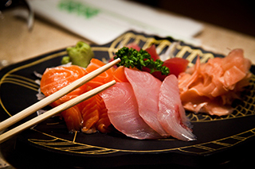

Enjoy a unique blend of Japanese cuisine and oriental culture here in Westfield, New Jersey set in an atmosphere that captures the very essence of Japan ... It is called the Fujiyama Experience.
Fujiyama Mama Restaurant is the perfect venue whether you are entertaining clients you need to impress or to celebrate one of those special occasions such as such a birthday or a hen/stag night.
All our customers have their own highly trained personal chef for the duration of the meal. Once you are taken to your table, the raw ingredients of your meal will shortly arrive and the chef will prepare and cook your meal on the hotplate surface, right in front of you. The food is delivered to you sizzling hot and fresh.
Our menu is extensive, accommodating for both carnivores and herbivores and is mouth watering. Many of our customers opt for one of our set banquets which are perfectly compiled to leave a pleasant feeling of satisfaction, not too much and not too little.
Alternatively you may wish to customize and create you own meal by selecting starters from the appetizers menu and main courses from the ala carte menu, and some may even brave it to our sushi page.